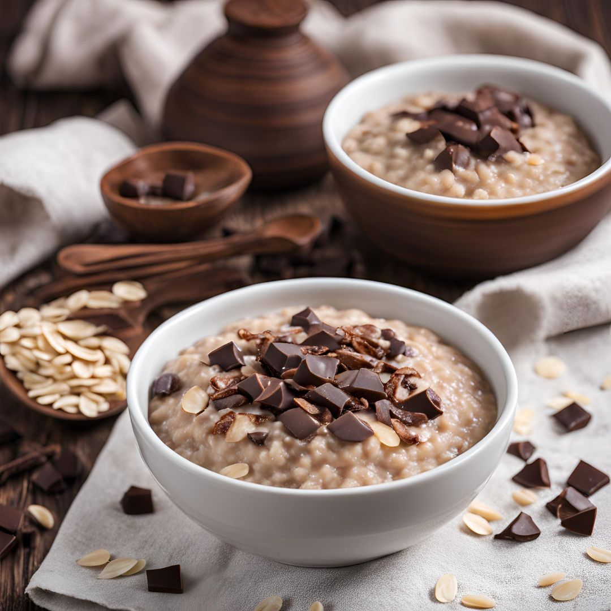
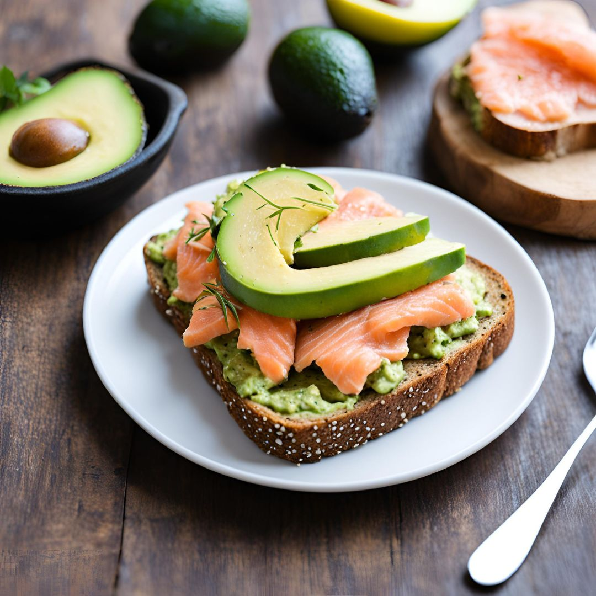
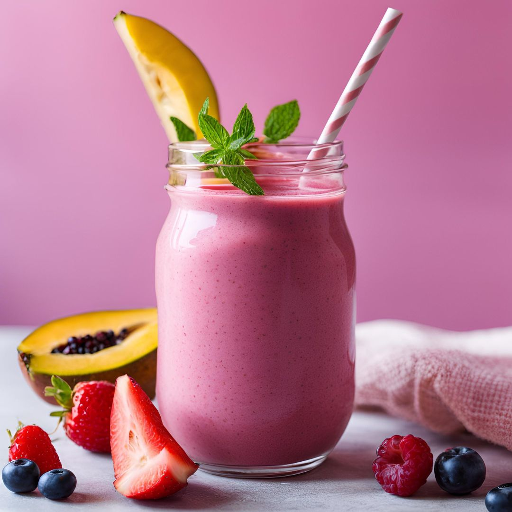
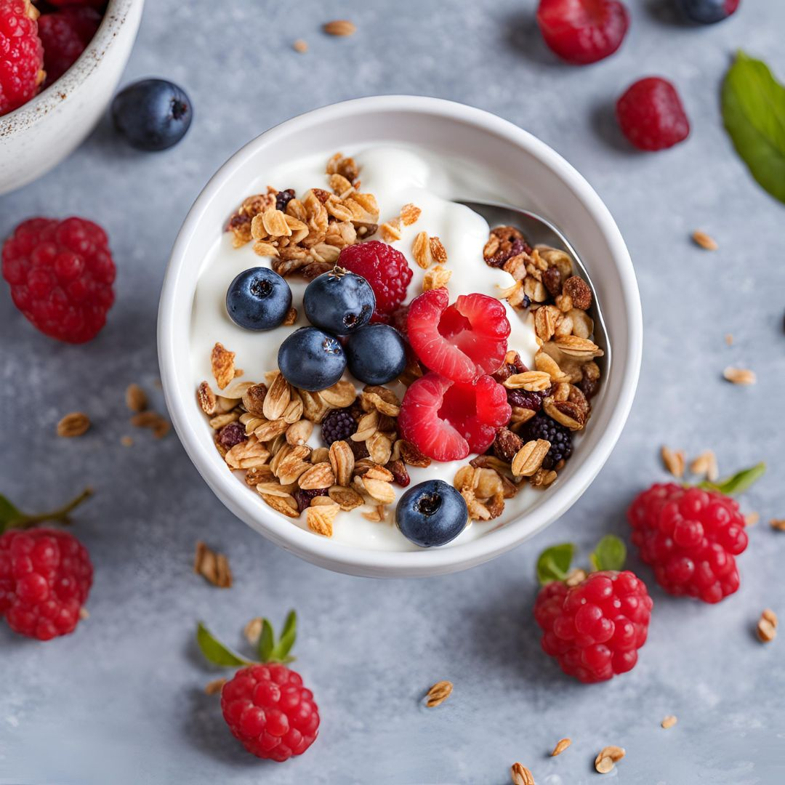

Ideas de desayunos saludables
Aquí encontrarás recetas fáciles y rápidas para comenzar tu día con energía.
Tortitas de avena
Una opción deliciosa y saludable con ingredientes naturales.
Ingredientes:
- 1 taza de avena en copos
- 1 plátano maduro
- 1 huevo
- 1/2 taza de leche (puede ser vegetal)
- 1 cucharadita de polvo de hornear
- 1 cucharadita de esencia de vainilla
- Miel o endulzante al gusto
- Aceite de coco para cocinar
Preparación:
- Tritura el plátano con un tenedor hasta obtener un puré.
- Mezcla todos los ingredientes en un bol hasta obtener una masa homogénea.
- Calienta una sartén con un poco de aceite de coco.
- Vierte pequeñas porciones de la mezcla y cocina por 2-3 minutos por cada lado.
- Sirve con miel, frutas o frutos secos al gusto.
Porridge de avena
Un desayuno nutritivo y fácil de preparar.
Ingredientes:
- 1/2 taza de avena
- 1 taza de leche o agua
- 1 cucharadita de canela
- Miel o endulzante al gusto
- Frutas frescas para decorar
Preparación:
- Calienta la leche o el agua en una olla.
- Agrega la avena y la canela, cocina a fuego medio durante 5-7 minutos, revolviendo constantemente.
- Sirve en un bol y añade miel y frutas frescas al gusto.
Tostadas integrales con aguacate y salmón
Una opción rica en grasas saludables para comenzar el día.
Ingredientes:
- 2 rebanadas de pan integral
- 1 aguacate maduro
- 50g de salmón ahumado
- Zumo de limón
- Sal y pimienta al gusto
Preparación:
- Tuesta el pan hasta que esté dorado.
- Machaca el aguacate con un poco de zumo de limón, sal y pimienta.
- Unta el aguacate sobre las tostadas y coloca el salmón por encima.
Batido de frutas
Refrescante y lleno de vitaminas para empezar bien la mañana.
Ingredientes:
- 1 plátano
- 1/2 taza de fresas
- 1/2 taza de leche o yogur
- Miel o endulzante al gusto
Preparación:
- Coloca todos los ingredientes en una licuadora.
- Licúa hasta obtener una mezcla homogénea.
- Sirve frío y disfruta.
Huevos revueltos con espinacas

Una opción proteica y saludable para un desayuno equilibrado.
Ingredientes:
- 2 huevos
- 1 taza de espinacas frescas
- 1 cucharada de aceite de oliva
- Sal y pimienta al gusto
Preparación:
- Calienta el aceite en una sartén.
- Añade las espinacas y saltea por 2 minutos.
- Bate los huevos y agrégalos a la sartén.
- Revuelve hasta que los huevos estén bien cocidos.
- Sirve caliente con tostadas integrales.
Pancakes de plátano

Fáciles de hacer, sin azúcar y con un sabor increíble.
Ingredientes:
- 1 plátano maduro
- 2 huevos
- 1/2 taza de avena
- 1 cucharadita de esencia de vainilla
- Aceite para cocinar
Preparación:
- Machaca el plátano y mezcla con los huevos y la avena.
- Calienta una sartén y engrasa con un poco de aceite.
- Vierte pequeñas porciones de la mezcla y cocina por 2 minutos por lado.
- Sirve con miel y frutas frescas.
Yogur con granola y frutos rojos
Ligero, delicioso y lleno de nutrientes esenciales.
Ingredientes:
- 1 taza de yogur natural
- 1/4 taza de granola
- 1/2 taza de frutos rojos frescos
- Miel al gusto
Preparación:
- Coloca el yogur en un tazón.
- Añade la granola y los frutos rojos por encima.
- Endulza con miel al gusto y disfruta.